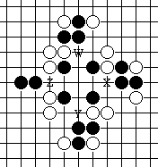
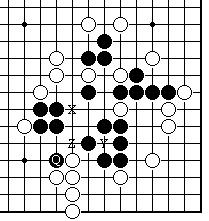
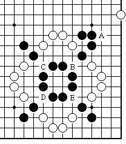
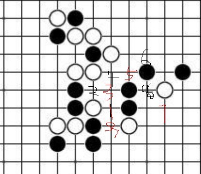

为了一道禁手题目闹的头疼
#1 为了一道禁手题目闹的头疼 作者：冰雪笑醉 发表时间：2012-12-20 23:09:23
非要说这个31已经是33禁手了
买嘎的
#2 Re:为了一道禁手题目闹的头疼 作者：小小亦默 发表时间：2012-12-20 23:25:16
目测不是［ 冰雪笑醉 于 2012-12-20 23:31:02 时花20金币送鲜花一朵］
#3 Re:为了一道禁手题目闹的头疼 作者：山城刀客 发表时间：2012-12-21 0:38:07
L线假活3，上下两头44禁手解禁，所以不是33禁手。
［ 冰雪笑醉 于 2012-12-21 0:42:54 时花20金币送鲜花一朵］
#4 Re:为了一道禁手题目闹的头疼 作者：掌棋宣传员 发表时间：2012-12-21 4:49:07
同上［ 冰雪笑醉 于 2012-12-21 9:00:10 时花20金币送鲜花一朵］
#5 Re:冰雪笑醉【==为了一道禁手题目闹的头疼==】 作者：冰雪笑醉 发表时间：2012-12-21 9:06:16
下面几道禁手题目不知道大见做过没！
下图请判断Z点是否为“禁手”点。

下图是一个更为复杂的问题：请问Z点是否为“禁手”？

请判断下图A点是否为“禁手”？
#6 Re:为了一道禁手题目闹的头疼 作者：夏百萧 发表时间：2012-12-21 9:22:52
Z点，感觉上不是禁手
三三后同时形成的个长连的趋势
不知道说的对不对……
#7 Re:为了一道禁手题目闹的头疼 作者：八了个卦 发表时间：2012-12-21 12:42:09
让软件判定#8 Re:为了一道禁手题目闹的头疼 作者：冰雪笑醉 发表时间：2012-12-21 13:38:20
说出原因！为什么是禁或不是禁~
#9 Re:八了个卦【==Re:为了一道禁手题目闹的头疼==】 作者：掌棋宣传员 发表时间：2012-12-21 16:48:04
引用：软件判断禁手也有错的时候~
原文由 八了个卦 发表于 2012-12-21 12:42:09 :
让软件判定
#10 Re:为了一道禁手题目闹的头疼 作者：我是裁判 发表时间：2012-12-21 23:09:20
本人判定不是禁手#11 Re:为了一道禁手题目闹的头疼 作者：炫飞冰弦 发表时间：2012-12-21 23:48:05
最后一个要不要这么晕……#12 Re:为了一道禁手题目闹的头疼 作者：卧室你大爷 发表时间：2012-12-24 8:00:35
第5手，第17手，第19手已成三，白棋为何不堵。
#13 Re:为了一道禁手题目闹的头疼 作者：冰雪笑醉 发表时间：2012-12-24 17:24:58
本来是没有数标的。就看31手是不是33。。。

［此帖子已被 冰雪笑醉 在 2012-12-24 17:27:24 编辑过］
#14 Re:冰雪笑醉【==Re:冰雪笑醉【==为了一道禁手题目闹的头疼==】==】 作者：天逸乄西西 发表时间：2012-12-27 19:53:17
引用：
原文由 冰雪笑醉 发表于 2012-12-21 9:06:16 :下面几道禁手题目不知道大见做过没！
下图请判断Z点是否为“禁手”点。
下图是一个更为复杂的问题：请问Z点是否为“禁手”？
请判断下图A点是否为“禁手”？
前两个Z点都是禁点吧？
因为Z点下了以后 后面的Y点都可以走 所以Z点是禁点
最后那个A点不是禁吧？ 因为A下后会影响A的判断的就是B点的横竖两个二
B点一走那就是四三三了 所以A不是禁
#15 Re:为了一道禁手题目闹的头疼 作者：天逸乄西西 发表时间：2012-12-27 20:10:19
看来我的判断错了。。。。。。。。。。。。。。。。
我刚拿打谱器摆一下了。。。。。
请看图
#16 Re:天逸乄西西【==Re:为了一道禁手题目闹的头疼==】 作者：冰雪笑醉 发表时间：2012-12-27 21:44:11
 捏的图打不开的，先存到桌面在上传嘛
捏的图打不开的，先存到桌面在上传嘛